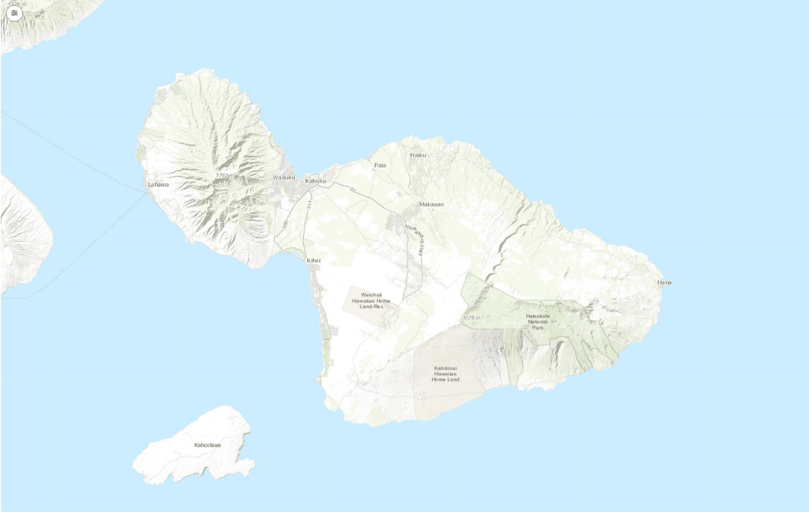
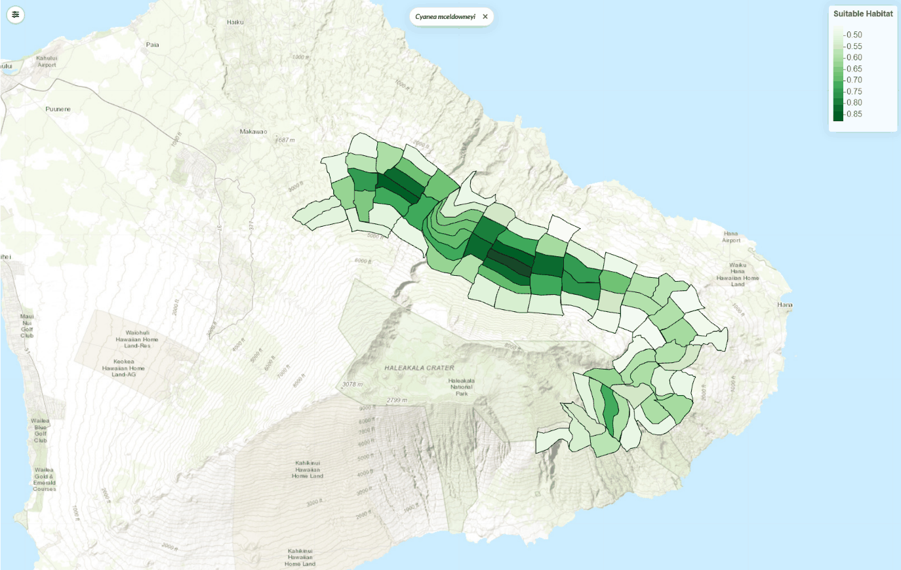
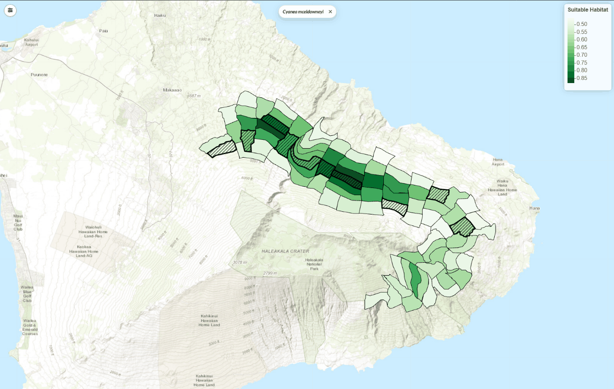
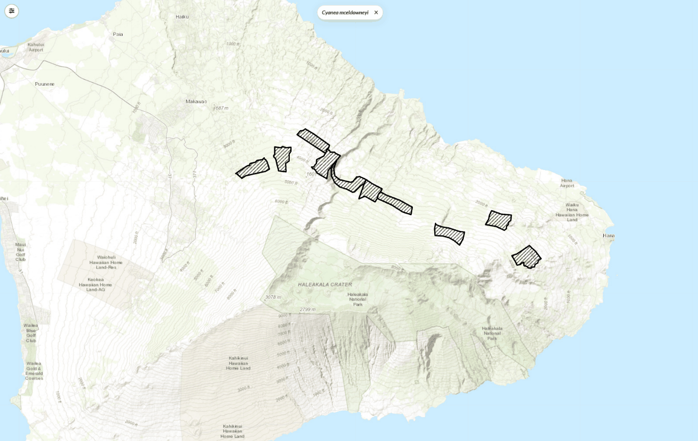
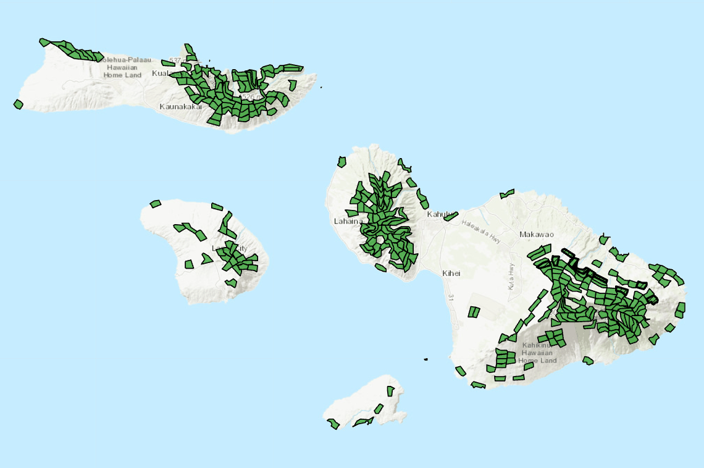

Integrated Multi-Scale Conservation Planning
The MNLCP is not only a spatial prioritization exercise or a standalone framework. It is a state-led, expert-engaged plan with several parts, deliberately combined into one flexible decision-support system.plan p.8, lines 614-617 The MNLCP is an initial application of IMCP.plan p.7, lines 561-562
The defining characteristics of IMCP are:plan p.8-9, lines 617-649
- State-led and practitioner-driven, rather than researcher-directed or top-down mandates.
- Expert-engaged, with specialists contributing qualitative judgment through open-ended, collaborative review.
- Integrated across scales:
- biologically, from populations to species, whole taxonomic groups, and ecosystems;
- spatially, from islands to mountains (mauna) to management sites;
- over time, from emergency actions for species facing imminent extinction to mid- and long-term recovery and restoration.
- Three planning components, deliberately combined: spatial prioritization (where to focus to meet explicit recovery targets), action prioritization (the most effective actions and the most efficient way to combine them), and ecosystem prioritization (large-scale opportunities that benefit all of Maui Nui's plants and animals).
- Decision support, giving managers flexible guidance rather than prescriptions.
- Living products, such as decision-support applications and implementation handbooks that can be updated as conditions, knowledge, and resources change.
- Transparent and adaptable, in how the plan was developed and how decisions are made, not only in the analytical tools.
- Partnership-based, working through collaboration with respect for local communities and cultures.
- Solution-oriented, building a culture of finding ways to overcome challenges.
How the planning processes fit together
IMCP sits above, and includes, each analytical part of the plan:plan p.9-10, lines 653-669
- IMCP is the overarching planning approach.
- Spatial prioritization is carried out through the Transparent, Flexible, Expert-engaged Systematic Conservation Planning (TFE-SCP) process. Systematic Conservation Planning (SCP) looks for a complementary network of places that together meets explicit conservation targets, rather than the best site for each species on its own.drafter definition; idea from plan p.3-4, lines 455-458
- OptimTFE is the site-selection prioritization tool used within TFE-SCP for the quantitative steps.
- Conservation actions are evaluated through a modified Priority Threat Management (PTM) process.
- Ecosystem prioritization adds complementary landscape-scale conservation.
This structure keeps the spatial tools in their place as parts of a broader planning system, not the system itself. It also makes sure the on-the-ground knowledge of dozens of subject matter experts is built in throughout.plan p.10, lines 670-673
Who needs help comes from the at-risk species lists. Where to manage comes from the recovery footprints. What to do comes from Priority Threat Management. When to act comes from identifying species facing imminent extinction and sequencing the actions.plan p.29, lines 1354-1361
Select any box to see what it does, who led it and what it produced. Adapted from plan Figure 1.
Text version of the diagram: the components at a glanceDetails
- IMCP (overall approach, DOFAW)
- Role: the umbrella that links every component into one decision-support system
- Question answered: How do all the parts fit into one plan?
- Links: includes Spatial prioritization, Action prioritization, Ecosystem prioritization, and Implementation
- Taxonomic Teams (DOFAW-coordinated)
- Role: species specialists who are the backbone of the plan
- Question answered: Who needs help?
- Outputs: at-risk species list; recovery targets; known population locations; habitat selections; most important actions; species facing imminent extinction; implementation sequence for each group
- Links: feed Spatial prioritization, Action prioritization, and Implementation
- Spatial prioritization (TFE-SCP; led by USGS)
- Role: maps where on the landscape to focus conservation to meet recovery targets
- Question answered: Where to manage?
- Outputs: recovery footprints; priority footprints; species, habitat, and threat metadata for each planning unit
- Links: uses OptimTFE for algorithmic groups; delivers footprints to the Adaptive Conservation Planner; informs Implementation; coordinates with Action and Ecosystem prioritization
- OptimTFE (within TFE-SCP)
- Role: prioritization tool that generates candidate footprints for Plants, Terrestrial arthropods, and Terrestrial snails
- Question answered: Which sets of planning units meet every species' targets?
- Outputs: large sets of candidate footprints for expert comparison
- Links: feeds Spatial prioritization
- Action prioritization (modified PTM; led by UH Mānoa)
- Role: weighs expected benefit, feasibility, and cost of conservation strategies
- Question answered: What to do?
- Outputs: 27 strategies compared; persistence estimates for 17 species groups; cost estimates; best-performing combinations (S25 and S27)
- Links: informs Implementation; coordinates with Spatial prioritization
- Ecosystem prioritization (led by UH Hilo)
- Role: identifies remaining good-quality native ecosystems and opportunities to protect and restore them
- Question answered: Where can protecting and restoring ecosystems benefit all native species?
- Outputs: ecosystem and special-feature maps; habitat quality and management landscape; four ecosystem priorities
- Links: complements Spatial prioritization; informs Implementation
- Implementation (led by DOFAW)
- Role: turns the results into a cohesive plan for action
- Question answered: When to do it?
- Outputs: emergency actions first; sequenced recovery actions; Managers' Handbook
- Links: uses the Adaptive Conservation Planner for annual work plans; actions are tracked through Monitoring
- Adaptive Conservation Planner (living tool)
- Role: holds the final spatial products and lets managers update them
- Question answered: What should this year's work plan be, and how do priorities change?
- Outputs: viewable and updatable footprints; annual work plans; management scenarios
- Links: receives footprints from Spatial prioritization; supports Implementation; updated through Monitoring and adaptive management
- Monitoring and adaptive management
- Role: feedback that lets the plan evolve
- Question answered: Is it working?
- Outputs: metrics for species recovery, threat reduction, and ecosystem condition
- Links: feeds back to the Conservation Planner and Implementation
- Core Team (DOFAW-led)
- Role: land managers, leaders of the other teams, and a facilitator, giving recommendations and organizational support to DOFAW
- Links: oversees and coordinates all teams
- Communications Team
- Role: informs the public and others about the MNLCP and its accomplishments
- Links: shares the plan as a whole
Spatial prioritization: where to manage
The Spatial Prioritization Team, led by USGS, addresses "where to manage" for the recovery of all Maui Nui at-risk species. It uses the USGS-developed TFE-SCP process: a comprehensive planning process with distinct stages, each supported by custom-built tools and each involving input from biological experts and land managers.plan p.12, lines 731-737





- Transparent in how decisions were made.
- Flexible enough to adapt to different data and management contexts.
- Expert-engaged at every stage. Field biologists and taxon specialists shaped inputs, criteria, and final products, not just the final check.plan p.12, lines 737-741
The process is state-led and practitioner-driven. DOFAW coordinated taxon expert teams, whose members participated in collaborative review sessions throughout, and DOFAW will implement the resulting priorities. USGS provided the technical methods, prioritization tools, and spatial analysis support.plan p.A1-1, lines 4942-4943, 4952-4956
The main products are conservation footprints: maps of the planning units (PUs) chosen for species recovery. A planning unit is a mapped area of about 2 km²plan p.13, line 763, drawn along watersheds, natural barriers, and elevation bands.plan p.13, lines 762-764
- Recovery footprints show the planning units needed to meet species recovery targets.plan p.A1-4, lines 5091-5093
- Priority footprints are nested subsets of recovery footprints, where both preventing extinction and recovery goals can be advanced. They are generally the most important places to start.plan p.A1-4, lines 5094-5095; p.81, lines 3264-3267
Two process pathways
Which pathway a group followed depended on how many species it has and how much information exists on their habitat needs. Both build on existing species plans.plan p.12, lines 747-751
The two TFE-SCP pathways
| Algorithmic pathway | Expert-led pathway | |
|---|---|---|
| Groups | Plants, Terrestrial arthropods, Terrestrial snails | Forest birds, Seabirds, Waterbirds, Aquatic invertebrates |
| When used | Many species, real differences in habitat quality, and practical issues such as access and ongoing management | Fewer focal species, and expert knowledge can set spatial priorities directly |
| How | OptimTFE generates many candidate footprints that each meet every species' targets; experts and managers compare them across criteria and choose one, then fine-tune it | Specialists draw priority areas directly through repeated rounds of web-map review |
| Shared tools | Expert Data Platform and Conservation Planner | Expert Data Platform and Conservation Planner |
Under the algorithmic pathway, OptimTFE generated hundreds of thousandsplan p.13, line 765; see notes of candidate footprints. Species experts and land managers compared them on footprint area, habitat quality, overlap with biodiversity reserves, ungulate management, accessibility, fire risk, and climate resilience, and chose footprints that meet both biological needs and practical feasibility.plan p.13, lines 765-772
The footprints live in the Adaptive Conservation Planner (Conservation Planner), a spatial tool that lets managers find cost-efficient strategies, adjust them as results and new information come in, build annual work plans, and explore management scenarios.plan p.12-13, lines 742-746, 774-780
Open the footprint map · About the Conservation Planner
Action prioritization: what to do
The Action Prioritization Team, led by UH Mānoa, addresses "what to do." It used a modified Priority Threat Management (PTM) process, a structured way to compare the expected costs, feasibility, and benefits of management strategies.plan p.13, lines 784-787; glossary p.122
DOFAW and UH Mānoa convened collaborative workshops in which roughly 100plan p.13, line 788 land managers and scientists contributed professional judgment through open-ended discussions on the cost, feasibility, and benefit of strategies for 374plan p.13, line 791; see notes of Maui Nui's at-risk plants and animals. The Taxonomic Teams later identified an additional 68plan p.14, lines 801-802 at-risk species.plan p.13-14, lines 787-802
The team and its experts:plan p.14, lines 803-810
- identified key threats to at-risk native plants and animals;
- identified conservation actions to address those threats;
- sorted the species into 17plan p.14, line 805 groups that respond similarly to threats and actions;
- estimated the expected benefits of strategies such as ungulate control and predator management; and
- estimated costs to find the most cost-effective options.
Success is measured as the chance that each species group keeps viable, self-sustaining populations over 20 years, with a target of at least 50 percent.plan p.vii, lines 253-254 In all, 27plan p.vii, line 252 strategies were compared: 17 single-focus strategies and 10 combinations.plan p.vii, lines 252-253 Implementing two combinations together, S25 (plant- and invertebrate-focused) and S27 (bird- and bat-focused), comes closest to meeting every group's needs.plan p.vii, lines 256-259
Taxonomic Teams then recommended the best order for each group's actions, starting with high-priority and foundational actions that set the stage for later ones, for example fencing, ungulate control, weed control, and then outplanting.plan p.14, lines 811-815
Ecosystem prioritization
The ecosystem effort, led by UH Hilo, looks beyond individual species. Healthy native ecosystems keep more plants and animals from becoming at risk. They also help the 442plan p.14, line 820 species already at risk recover and stay recovered by providing connectivity, buffers from threats, redundancy, and room to expand.plan p.14, lines 818-822
The ecosystem effort identifies:plan p.14, lines 825-832
- remaining good-quality native ecosystems and unique community types;
- conservation strategies that will reach ecosystem goals; and
- conservation opportunities based on habitat quality, the conservation status of lands, and the importance of the area to at-risk species or other values.
The plan maps tenplan p.viii, line 300 ecosystems and several special features (anchialine pools, lava tubes, bogs, and cliffs). Some ecosystems are nearly gone: lowland dry forest, once the most extensive type, keeps only about two percentplan p.viii, line 303; Ch 3e line 824 says "less than two percent" of its original area.plan p.viii, lines 299-305 The resulting ecosystem priorities, in order, are: maintain managed, fenced high-quality habitat; start ungulate management on unfenced, high-quality land that is already conservation-oriented, such as windward Haleakalā, two areas of Molokaʻi, and Lānaʻihale; engage landowners and partners where high-quality habitat lies outside conservation status, including eastern Molokaʻi, above Makawao, and Kahikinui; and restore degraded habitats that matter most for recovery, connectivity, diversity, and climate resilience.plan p.viii, lines 305-313
Implementation: when to do it
DOFAW land managers, planners, and decision-makers were engaged throughout. The Implementation Team, led by DOFAW, started the planning, set management needs and objectives, and turned the results of the other efforts into a cohesive plan for implementation: the "when to do it" guidance. It also oversees a Managers' Handbook, a practical guide for DOFAW staff using MNLCP tools and outputs. The team includes the land managers who will carry out the plan, along with partner organizations.plan p.14-15, lines 836-846
The plan cannot be carried out everywhere at once over its 20-yearplan p.29, lines 1332-1335 horizon, so timing matters:plan p.29, lines 1332-1352
- Emergency first. Species facing imminent extinction get immediate action, often ex situ (seed storage, captive rearing) or very small predator-proof exclosures.plan p.16, lines 888-890
- Greatest benefit next. As a general rule, the actions with the greatest conservation benefit start first.
- Synergy. Some lower-benefit actions add much more when paired; ungulate fencing with weed control delivers considerably more than either alone.
- Foundations before reintroduction. Habitat restoration must come before a species is reintroduced.
- Opportunity. A cost-effective, field-ready medium-priority action may be worth doing sooner than a higher-benefit action that is years from field-ready.
The plan maps habitat and actions at the planning-unit level. Field teams then site work within each unit, supported by Conservation Planner tools that show species occurrences, quality habitat, potential recovery sites, where climate is changing fastest, and likely microhabitats.plan p.29-30, lines 1364-1373
See how managers use the plan · Monitoring and adaptive management
For practitioners: how the spatial prioritization works (Appendix 1 digest)Details
This digest summarizes Appendix 1 of the plan. Methods and results for Maui Nui are being prepared for publication by the spatial prioritization team.plan p.A1-1, lines 4924-4927
Why TFE-SCP
Maui Nui's at-risk species face overlapping threats across shared landscapes. Planning for one species or one site at a time does not show where limited resources would help the most species. TFE-SCP generates many candidate footprints with a flexible algorithm, then chooses among them by weighing trade-offs in criteria the experts agreed on.plan p.A1-1, lines 4930-4942 Footprints account for habitat quality, accessibility, climate resilience, and management feasibility, and can be coordinated across groups and with action and ecosystem prioritization.plan p.A1-1, lines 4947-4949
Planning units
Maui Nui is divided into 1,400plan p.13, line 763 planning units of about 2 km²plan p.13, line 763 each, based on watersheds, natural barriers, and elevation bands.plan p.13, lines 762-764 Each unit is sized to support a single population of an at-risk species; exact siting within a unit is left to field teams.plan glossary p.122 Terrestrial snails are the exception: their network is built from candidate exclosure sites, not standard planning units.plan p.A1-7, lines 5204-5206
Algorithmic pathway stages (Plants, Terrestrial arthropods, Terrestrial snails)
- Data gathering and vetting. Occurrence records, population locations, habitat suitability models, and planning-unit data are compiled in the Expert Data Platform; taxon experts validate inputs and flag errors or gaps.
- Candidate footprint generation. The OptimTFE R package builds a large set of candidate footprints, each meeting species-specific targets.
- Criteria exploration and trade-off analysis. Experts and managers compare candidates across criteria and pick a draft footprint that balances competing values.
- Planning-unit review. Planning units and species targets in poor habitat are reviewed and adjusted before and after the draft is chosen.
- Expert fine-tuning. Experts review the draft by species and planning unit in the Conservation Planner and propose target changes with documented reasons, through a review and approval workflow.
- Finalization. The reviewed footprint becomes the official, versioned conservation footprint for reporting and implementation, while the Conservation Planner remains a living platform for updates.plan p.A1-1-A1-2, lines 4959-4986
Expert-led pathway (Forest birds, Seabirds, Waterbirds, Aquatic invertebrates)
Specialists drew priority areas directly through repeated web-map review, using the same Expert Data Platform and Conservation Planner but without OptimTFE candidate footprints. This suits groups with few focal species and strong existing expert knowledge.plan p.A1-2, lines 4988-4992; p.A1-5, lines 5107-5112
Data inputs
Experts reviewed and refined each input before use.plan p.A1-2, lines 4995-4997
- Species occurrence and population data. Delineated populations for Plants where available, vetted records otherwise; modern and historical records for Terrestrial snails; modern records plus host-plant associations for Terrestrial arthropods. Taxon experts vetted all occurrence data in collaborative review sessions.plan p.A1-2, lines 4999-5006
- Habitat suitability and climate envelopes. Habitat suitability models for Plants; expert-reviewed climate-similarity models for Terrestrial snails; host-plant distributions and broad climate envelopes for Terrestrial arthropods.plan p.A1-2, lines 5007-5015
- Habitat quality. Native habitat condition, canopy cover, vegetation structure, and invasive species impacts.plan p.A1-3, lines 5016-5019
- Biodiversity reserves. Lands with a durable conservation nexus, mainly the Forest Reserve System.plan p.A1-3, lines 5021-5024
- Ungulate management areas. Areas with active fencing and/or removal.plan p.A1-3, lines 5026-5029
- Accessibility. Distance to roads and trails, helicopter landing zones, and terrain difficulty.plan p.A1-3, lines 5031-5034
- Fire risk. Probability and potential impact of wildfire.plan p.A1-3, lines 5036-5037
- Climate resilience. Estimated from the pace of historical change in temperature and rainfall, rather than uncertain future projections.plan p.A1-3, lines 5039-5042
- Group-specific rules. Representation across each species' historic range, limits on target species per planning unit, and rules against placing incompatible species together.plan p.A1-3, lines 5044-5047
Selection criteria
No single metric, and not the algorithm alone, chose the final footprint. Candidates that all met species targets were compared on nineplan p.A1-3-A1-4, lines 5054-5079 criteria, and each group weighted them differently:plan p.A1-3, lines 5051-5053; p.A1-4, lines 5080-5082
- Footprint area (fewer planning units concentrates resources)
- Habitat quality
- Mean habitat suitability of target species
- Share in biodiversity reserves
- Share under active ungulate control
- Accessibility
- Fire risk
- Climate resilience
- Overlap with other groups' footprints (shared management)
Footprint types
Footprints were produced for each of the sevenplan p.A1-4, line 5088 focal groups and can be viewed alone or combined as a multi-taxon "mega-footprint." Appendix 1 names recovery footprints, priority footprints (nested subsets of recovery footprints), and implementation subsets that guide near-term staging.plan p.A1-4, lines 5086-5097; see notes Every footprint keeps species-level detail: which species each unit was chosen for, each species' habitat suitability, and whether the choice rests on occurrence records or model predictions.plan p.A1-4, lines 5098-5100
Results by group (Appendix 1)
Spatial prioritization by taxonomic group, as described in Appendix 1
| Group | Pathway | Emphasis or method | Products |
|---|---|---|---|
| Plants | Algorithmic | Habitat quality, biodiversity reserves, ungulate management, compact footprint | Recovery footprint of 317 PUs; priority footprint of 181 PUs with up to three recovery populations per species where feasible |
| Terrestrial snails | Algorithmic (exclosure sites) | Exclosure count, accessibility, fire risk, climate resilience | Network of 32 exclosure sites with three targets per species; priority network of 14 sites giving each of the 49 species one target |
| Terrestrial arthropods | Algorithmic | Habitat quality, known rare arthropod records, alignment with the plant footprint | Interim-recovery footprint (target of five locations per species) for taxa with enough modern records; Focal Area Survey areas; Basic Species-specific Surveys for species with no usable spatial data |
| Forest birds | Expert-led | Web-map review | 4 species, 3 listed |
| Seabirds | Expert-led | Several rounds of map edits using updated occurrence data and predator-proof fence locations | 3 listed species: Hawaiian petrel, Newell's shearwater, band-rumped storm-petrel |
| Waterbirds | Expert-led | Web-map and spreadsheet review | 5 listed species |
| Aquatic invertebrates | Expert-led | Watershed-scale delineation | 11 species, 4 listed |
Snail work focuses on preventing extinction rather than full recovery. Its primary management unit is a kīpuka kāhuli: a managed predator-free refuge enclosed by a predator-proof fence.plan p.A1-6-A1-7, lines 5187-5195 Filtering the plant priority footprint to Plant Extinction Prevention Program (PEPP) species identifies 110plan p.A1-6, line 5174; see notes planning units, an initial estimate of where near-term recovery and extinction prevention overlap.plan p.A1-6, lines 5173-5176
Using the footprints
In the Conservation Planner, each planning unit or exclosure site shows its target species, habitat scores, the evidence behind it, and expert notes on why it was selected. All group footprints can be viewed together; where they overlap, actions for one group can benefit others. The arthropod footprint overlaps substantially with the plant footprint, so many arthropod sites benefit from work already planned for plant recovery.plan p.A1-5, lines 5102-5104, 5132-5136; p.A1-6, lines 5179-5185; p.A1-7, lines 5218-5222; p.A1-8, lines 5262-5270
Limitations noted in the plan
- Occurrence data are sparse for many snail taxa; the network should be updated as surveys find more populations. The snail network does not address landscape-scale threats.plan p.A1-7, lines 5224-5229
- Some arthropod species may have no targets until surveys provide defensible recovery locations.plan p.A1-8, lines 5271-5273
- Some plant species remain below target because suitable sites or known populations are lacking; these gaps are documented.plan p.A1-6, lines 5176-5178